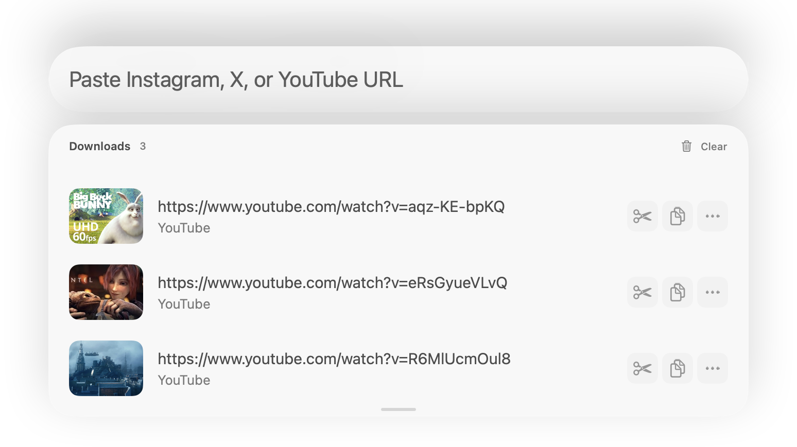

PKMediaDownloader transforme un lien en fichier sur votre Mac. Téléchargement par yt-dlp, historique pour tout retrouver, découpe pour ne garder que l’extrait. App native, sans compte.
macOS 14+ · Apple Silicon · DMG ou Homebrew · gratuit

Captures natives de l’app, avec données fictives — pas une maquette.
YouTubePlaylistsInstagramX / TwitterTikTokVimeodes milliers de sites via yt-dlpYouTubePlaylistsInstagramX / TwitterTikTokVimeodes milliers de sites via yt-dlp
Le parcours en trois gestes
Un lien, un fichier, l’extrait qui compte.
Pas de tableau de bord à configurer : l’app enchaîne les trois étapes et reste hors du chemin.
Coller
Le lien ne reste que le début.
Collez l’adresse d’une vidéo ou d’une playlist ; le presse-papiers est détecté automatiquement.
yt-dlp télécharge et assemble un MP4 (H.264/AAC) via ffmpeg.
Selon le site, l’app utilise la session de votre navigateur connecté.
YouTubePlaylistsInstagramXTikTok
Garder
Tout reste sur votre disque.
Le fichier arrive dans votre dossier de téléchargement, prêt à l’emploi.
L’historique garde vignettes et actions rapides : copier, révéler, découper.
Le raccourci global ⌘⇧6 rappelle l’app depuis n’importe quelle application.
⌘⇧6HistoriqueAuto-copie
Découper
Ne gardez que le passage utile.
Ouvrez la découpe depuis l’historique ou avec ⌘↩.
Déplacez début et fin sur la frise de l’éditeur natif.
Sauvegardez l’extrait ou copiez-le pour le coller ailleurs.
ffmpegExtrait local⌘↩
Dans l’app
Pensée pour retrouver.
Télécharger n’est que la moitié du travail. L’app garde une trace de chaque fichier et laisse le moteur yt-dlp se mettre à jour sans réinstaller.
⌘⇧6
Raccourci global, accessible depuis toutes les apps.
pkmd
CLI incluse : télécharger, lister l’historique, mettre à jour le moteur.
yt-dlp
Des milliers de sites pris en charge, moteur embarqué et mis à jour depuis l’app.
cobalt
Si un site résiste, Cobalt reste un lien externe de secours — aucune URL n’est envoyée automatiquement.
Capture native des réglages, préférences fictives.
Installation
Deux façons d’installer.
Le cask Homebrew installe aussi yt-dlp et ffmpeg. Avec le DMG seul, faites brew install yt-dlp ffmpeg.